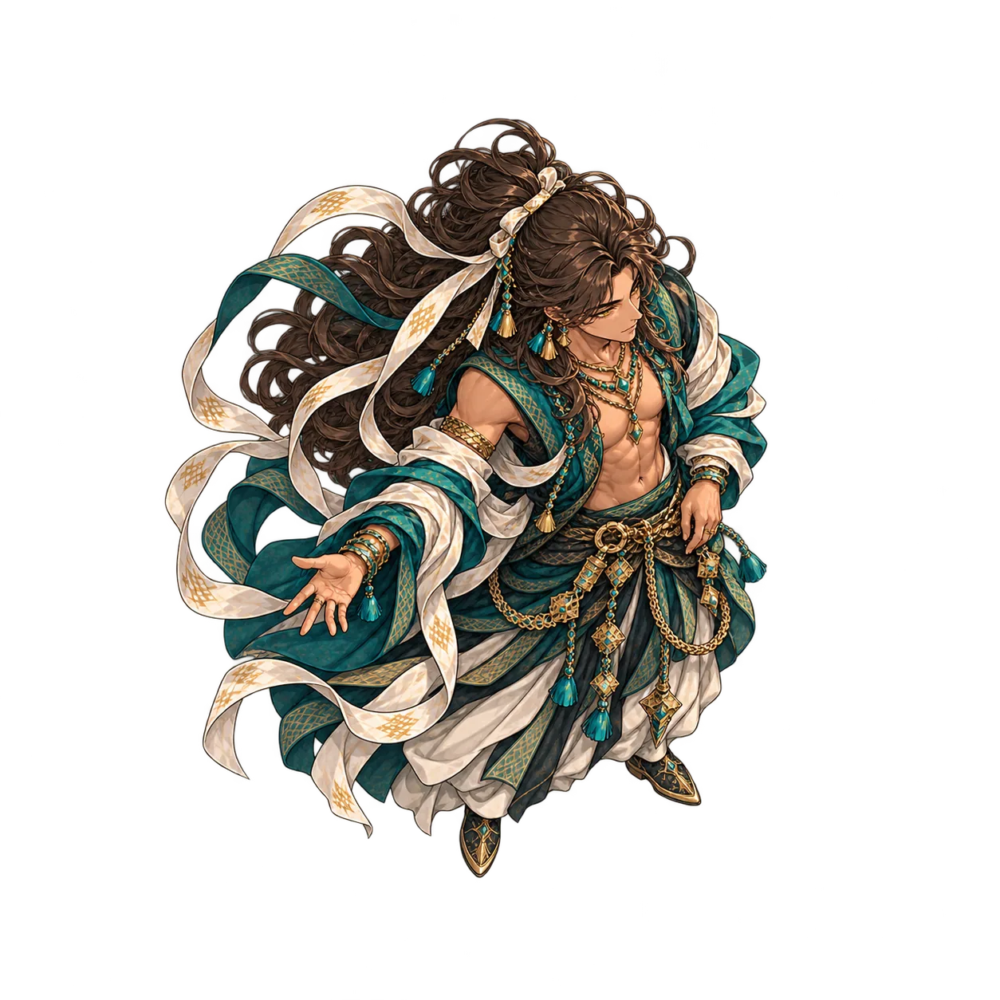

Fabula Sprite Studio
Prepara una ficha de producción para convertir una ilustración normal en un paquete de sprites animados para Foundry.

Ejemplos de movimiento
Elige un perfil para ver su animación de carrera y preparar la misma opción para la solicitud.
Muestra de acabado para el perfil TOP-DOWN Token HD

La muestra fija el acabado HD, la iluminación cenital y el encuadre seguro. Tu ilustración fija la identidad y la paleta. La imagen original no se modifica ni se sube desde esta página.
Gestos, daño y reposo según la vida
El personaje respira en reposo. Cada 8–16 segundos puede mirar alrededor, rascarse, acomodarse una prenda o cambiar el apoyo de los pies. Al recibir daño alterna entre dos reacciones de 1,25 segundos. Por debajo de la mitad de su vida, descansa encorvado y con respiración pesada.
La ficha incluye los dibujos y las reglas de reproducción que debe implementar el módulo del juego.